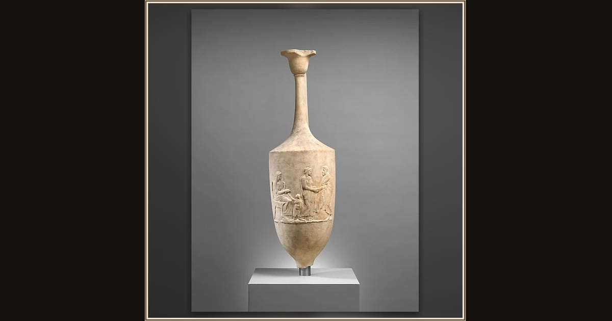

Marble funerary lekythos
Unknown · ca. 375–350 BCE · The Metropolitan Museum of Art · New York, USA
A marble funerary oil flask carved with mourners shows how Greek families pictured farewell and remembrance at a grave. Explore its place in Book I of the Odyssey.